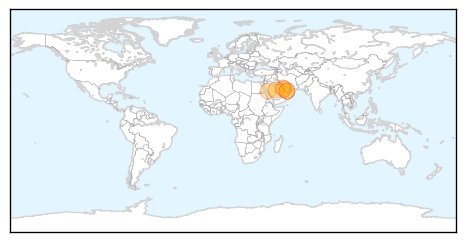

Yellow Fever
30-Day Web Trend
0 alerts, 0 warnings
30-Day Twitter Trend
0 alerts, 0 warnings

Article Locations

Article Confidences

Top Articles:
-
No articles found for Mar 09, 2015
Top Tweets:
-
No tweets found for Mar 09, 2015
MERS
30-Day Web Trend
16 alerts, 5 warnings
30-Day Twitter Trend
13 alerts, 2 warnings

Article Locations
Article Confidences

Top Articles:
Top Tweets:
- 0.687
- AFD Blog `Saudi MOH Reports 4 New MERS Cases in Riyadh, 3 Deaths' MERS-CoV http://t.co/XCWzJgy498
- 0.592
- RT: Middle East respiratory syndrome coronavirus (MERS-CoV) case in Germany. Here is the posting from: http://t.co/CDfeyjE3k…